Tous les articles
91 articles publiés
Juillet 2026 · 38 articles
Le Vatican a confirmé jeudi l'excommunication de six évêques de la Fraternité Saint-Pie X, actant le schisme de ce mouve…
2 juillet 2026 · 4 sourcesLe chancelier allemand Friedrich Merz a annoncé un vaste ensemble de réformes économiques pour relancer l'économie allem…
2 juillet 2026 · 4 sources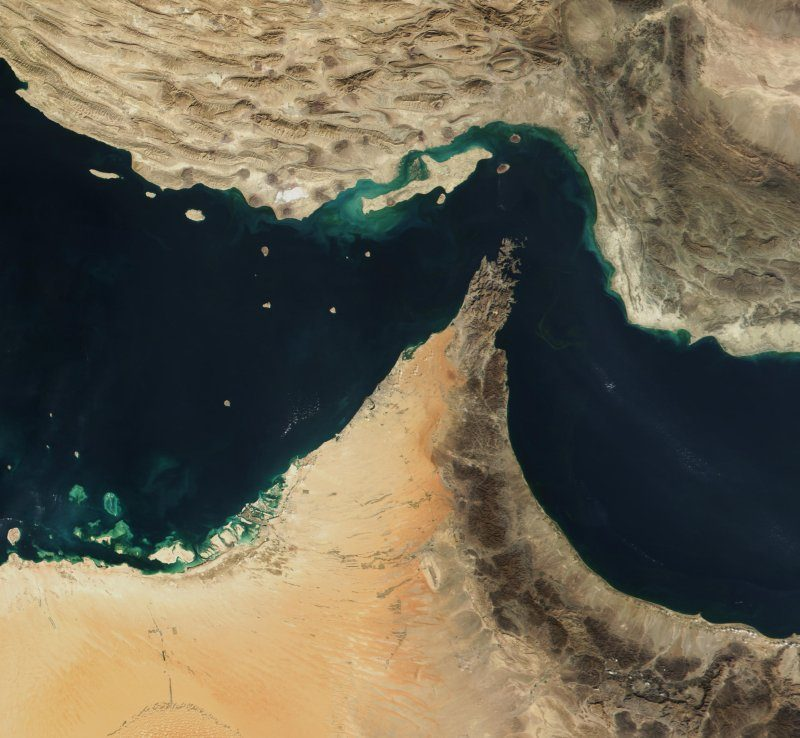
Le transport aérien est confronté à des défis importants en raison de la crise du détroit d'Ormuz, avec des prix du kéro…
2 juillet 2026 · 4 sourcesMarc Bloch, historien français du XXe siècle, est entré au Panthéon le 23 juin 2026, 82 ans après avoir été assassiné pa…
2 juillet 2026 · 4 sources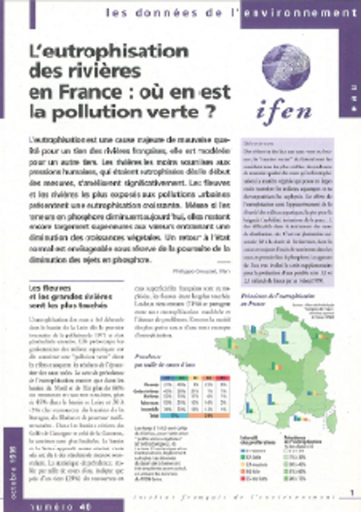
La baie de Guanabara, symbole de Rio de Janeiro, reçoit 65 % des eaux usées de la métropole, entraînant une prolifératio…
2 juillet 2026 · 3 sourcesUne équipe canadienne a développé un programme utilisant un grand modèle de langage pour orchestrer des attaques et repé…
2 juillet 2026 · 4 sources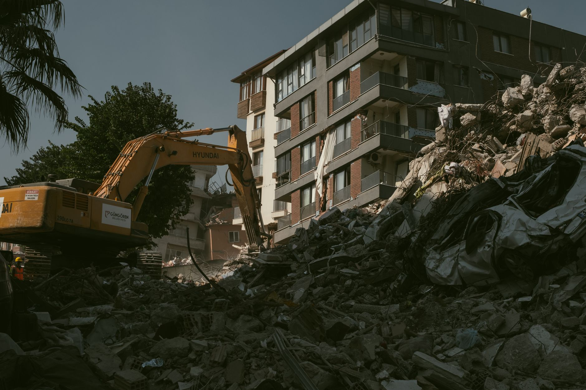
Des sauveteurs tentent depuis huit jours d’extraire un homme des décombres d’un immeuble à Catia La Mar, au Venezuela, a…
2 juillet 2026 · 4 sourcesUn spécimen de Tyrannosaurus rex exceptionnel, surnommé 'Gus', a été présenté à New York avant sa vente aux enchères pré…
2 juillet 2026 · 3 sourcesLe Danemark a annoncé un plan pour hiérarchiser l'accès au réseau électrique, en donnant la priorité aux services essent…
2 juillet 2026 · 3 sourcesDes ossements humains ont été découverts dans une église de Maastricht aux Pays-Bas, suscitant des spéculations sur leur…
2 juillet 2026 · 3 sourcesLa corruption liée au narcotrafic est en augmentation en France, avec des cas de policiers, d'agents pénitentiaires et d…
2 juillet 2026 · 4 sourcesLe bidonville de Stains, situé en Seine-Saint-Denis, a été démantelé le 1er juillet 2026, après plusieurs mois de prépar…
2 juillet 2026 · 3 sourcesUne étude récente portant sur 154 000 adultes remet en question l'efficacité des suppléments de vitamine D et de calcium…
2 juillet 2026 · 4 sourcesSelon l'Observatoire européen austral (ESO), la prolifération de satellites en orbite basse représente une menace signif…
2 juillet 2026 · 4 sourcesLe Parlement français se prépare à réviser la loi de bioéthique de 2021, avec plus de 80 recommandations formulées par l…
2 juillet 2026 · 4 sourcesLe lancement de Cartes.gouv.fr offre une alternative française à Google Maps, avec plus de 1 100 couches de données cart…
2 juillet 2026 · 4 sourcesLe géant franco-allemand de l'armement KNDS a annoncé mercredi reporter son entrée en Bourse, initialement prévue pour c…
2 juillet 2026 · 4 sourcesDes traces rouges observées dans une grotte du sud du Pays de Galles pourraient être les plus anciennes peintures rupest…
2 juillet 2026 · 4 sources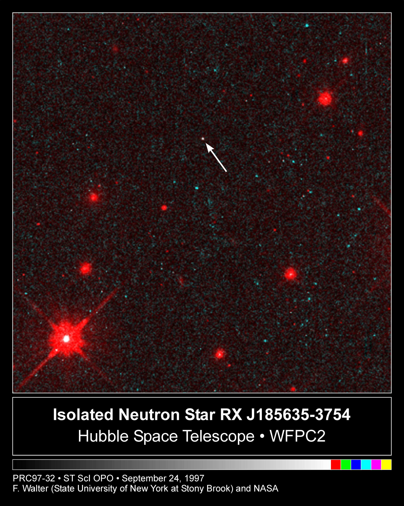
Une équipe d'astronomes a étudié la supernova SN 2021yfj, révélant des informations sur les couches internes d'une étoil…
2 juillet 2026 · 4 sourcesLa province du Guizhou, en Chine, a connu une explosion de constructions de ponts et d'autoroutes au cours de la dernièr…
2 juillet 2026 · 4 sourcesLes climatiseurs portables sont de plus en plus populaires pour faire face aux fortes chaleurs, avec des modèles comme l…
1 juillet 2026 · 3 sourcesSelon Jean Peyrelevade, économiste et ancien haut fonctionnaire, la dette publique française est actuellement non souten…
1 juillet 2026 · 4 sourcesLe 29 juin 2026, 26 scientifiques ont publié une tribune dans Le Figaro pour répondre aux propos d'Emmanuel Macron sur l…
1 juillet 2026 · 4 sourcesL'administration Trump a levé les restrictions sur les modèles d'intelligence artificielle d'Anthropic, permettant leur …
1 juillet 2026 · 3 sourcesDes centaines de méduses se sont échouées sur les plages du Calvados en Normandie, offrant un spectacle surprenant et im…
1 juillet 2026 · 4 sourcesLa canicule en France a entraîné une forte hausse du nombre de décès, notamment à domicile, avec environ 1 000 morts de …
1 juillet 2026 · 4 sources
Selon une étude présentée au congrès SLEEP 2026, les difficultés d'endormissement et la somnolence diurne excessive pour…
1 juillet 2026 · 4 sources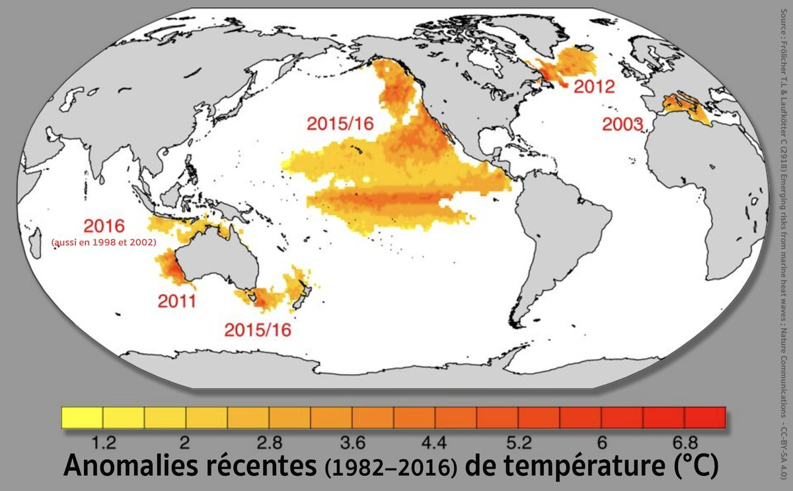
Le nord-ouest de la Méditerranée a enregistré une vague de chaleur maritime d'une intensité historique, avec une moyenne…
1 juillet 2026 · 4 sourcesLe gouvernement espagnol a reçu plus d'un million de demandes de régularisation de la part de sans-papiers, selon le pre…
1 juillet 2026 · 4 sourcesLa marque Legami propose une nouvelle collection d'accessoires de plage pour l'été 2026, disponibles sur Amazon à des pr…
1 juillet 2026 · 3 sourcesLe texte de la proposition de loi relative au droit à l'aide à mourir a été approuvé pour la troisième fois par les dépu…
1 juillet 2026 · 4 sourcesLe Sénat a voté pour la réintroduction de l'acétamipride, un pesticide interdit en France, dans le cadre de la loi d'urg…
1 juillet 2026 · 4 sourcesSelon l'Inserm, le dopage concerne également les sportifs amateurs, avec des pratiques variées selon les disciplines, co…
1 juillet 2026 · 4 sourcesSelon l'Inserm, les addictions sont des pathologies cérébrales définies par une dépendance à une substance ou un comport…
1 juillet 2026 · 4 sources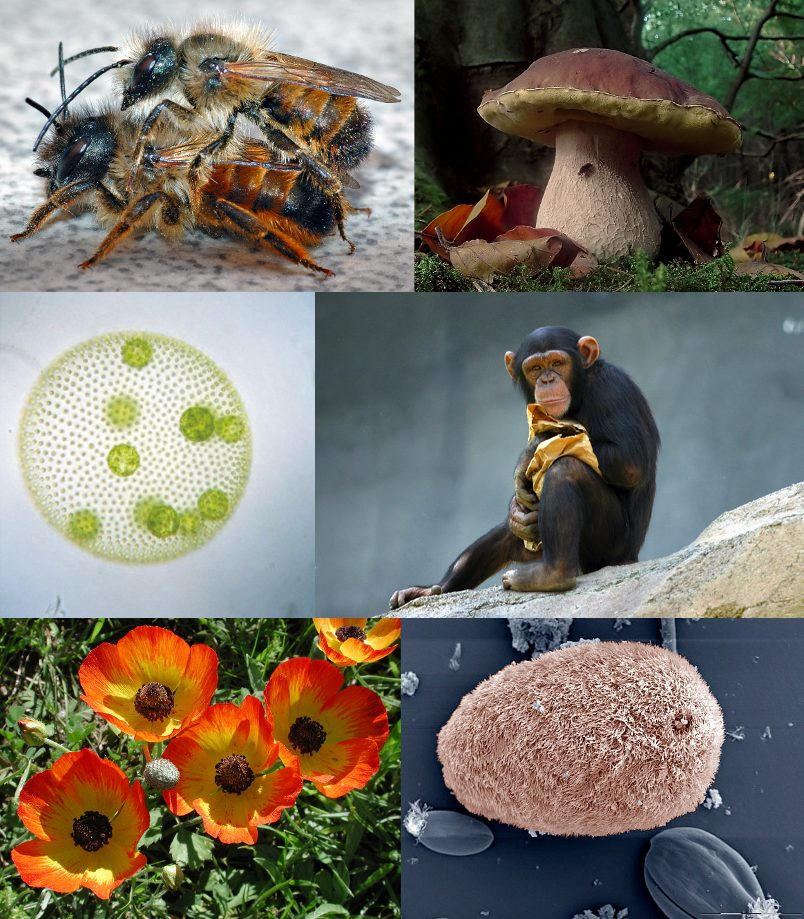
L'émergence des cellules eucaryotes il y a plus de 2 milliards d'années est un événement clé dans l'histoire de la vie s…
1 juillet 2026 · 4 sourcesMark Zuckerberg et son épouse Priscilla Chan ont dévoilé un atlas d'un milliard de protéines, généré grâce à l'intellige…
1 juillet 2026 · 3 sourcesSelon le Dr Cohen, certains yaourts contiennent une teneur élevée en graisses saturées, avec 7,1 g par pot, soit plus qu…
1 juillet 2026 · 4 sourcesSelon des documents officiels, Donald Trump a gagné environ 1,2 milliard de dollars grâce aux cryptomonnaies en 2025, ce…
1 juillet 2026 · 4 sourcesJuin 2026 · 53 articles
Withings, spécialiste des instruments de mesure de données de santé, a dégagé ses premiers bénéfices après dix-huit ans …
30 juin 2026 · 4 sourcesApple a décidé d'accélérer le rythme de ses mises à jour de sécurité pour lutter contre la menace croissante de l'intell…
30 juin 2026 · 4 sourcesSelon les simulations, un astéroïde de 500 mètres de diamètre tombant sur Paris à une vitesse de 17 km/s pourrait détrui…
30 juin 2026 · 4 sourcesLe gouvernement sud-coréen a dévoilé un plan d'investissement de plus de 1.000 milliards d'euros sur dix ans pour les se…
30 juin 2026 · 3 sources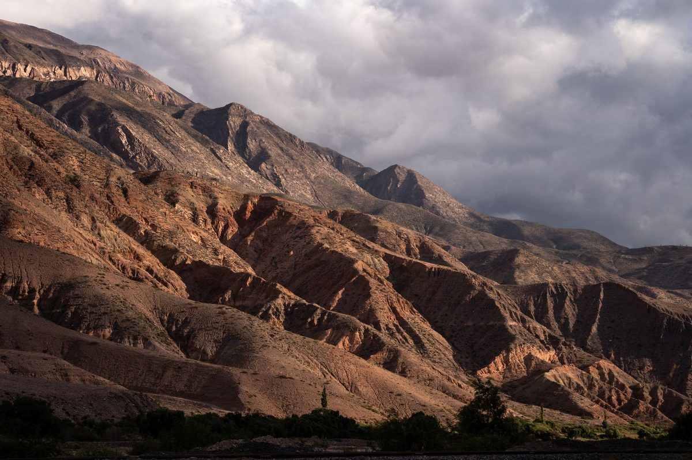
Un variant d'hantavirus a été détecté chez des rongeurs en Terre de Feu, en Argentine, selon des analyses menées par l'I…
30 juin 2026 · 3 sourcesLe diagnostic préimplantatoire des aneuploïdies (DPI-A) est une technique utilisée pour détecter des anomalies chromosom…
30 juin 2026 · 4 sourcesLe climatologue Gilles Ramstein a souligné que les canicules étaient prévues depuis le premier rapport du GIEC en 1990, …
30 juin 2026 · 4 sourcesLa société française ChapsVision a remporté un contrat avec les services du renseignement intérieur français pour rempla…
30 juin 2026 · 4 sourcesLa ministre de la Transition écologique, Monique Barbut, a déclaré que la tension sur la ressource en eau concernera tou…
30 juin 2026 · 4 sourcesLa baie de Guanabara, symbole de Rio de Janeiro, reçoit 65 % des eaux usées de la métropole, entraînant une prolifératio…
30 juin 2026 · 4 sourcesLe Congrès international des mathématiciens se tiendra du 23 au 30 juillet 2026 à Philadelphie, aux États-Unis, avec la …
30 juin 2026 · 4 sourcesLe 28 juin 2026, les astronomes ont confirmé l'existence de 8 228 exoplanètes dans la Voie lactée, dont deux planètes gé…
30 juin 2026 · 4 sourcesUne étudiante a conçu un parapluie qui produit de l’électricité grâce à sa toile innovante, pouvant accélérer la transit…
30 juin 2026 · 3 sourcesSelon Gérald Darmanin, la prise de conscience des violences faites aux enfants reste insuffisante dans la chaîne pénale,…
30 juin 2026 · 4 sourcesSelon Denis Saint-Amand, le rire en politique est de plus en plus utilisé pour entretenir une domination, notamment par …
29 juin 2026 · 4 sourcesSelon Julien Dossier, fondateur de Quattrolibri, les canicules entraînent des milliers de morts en France, ce qui n'est …
29 juin 2026 · 4 sourcesLe double séisme qui a frappé le Venezuela a fait au moins 1 450 morts et plus de 50 000 personnes portées disparues, se…
29 juin 2026 · 4 sourcesDes analyses ADN sophistiquées ont révélé des liens inattendus entre trois affaires criminelles à Amsterdam, aboutissant…
29 juin 2026 · 4 sources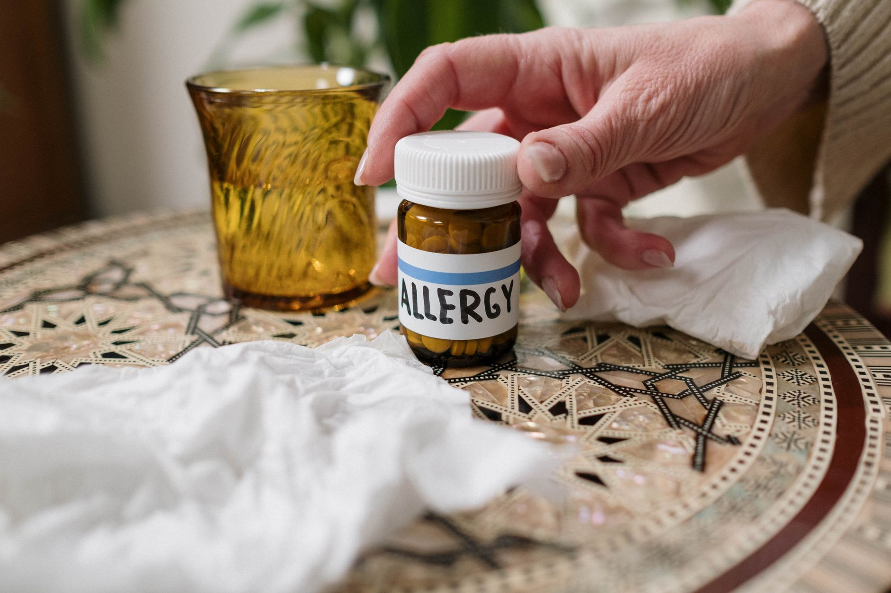
Une étude menée par l'Inserm a démontré l'efficacité de l'immunothérapie allergénique sublinguale sur les symptômes et l…
29 juin 2026 · 4 sourcesDes chercheurs utilisent l'intelligence artificielle pour déchiffrer des papyrus carbonisés de la bibliothèque de Lucius…
29 juin 2026 · 4 sourcesLe plus grand accélérateur de particules du monde, situé au CERN, entame une modernisation de quatre ans pour améliorer …
29 juin 2026 · 4 sources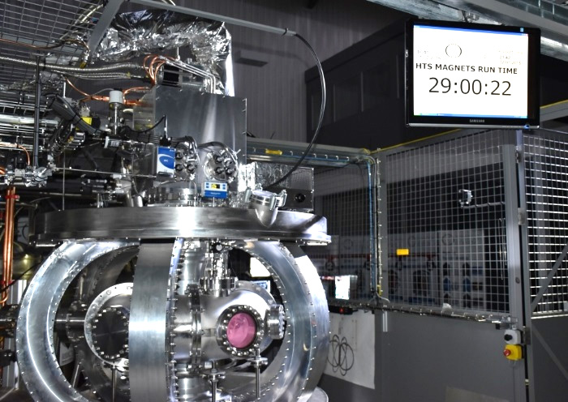
La Chine a dévoilé un aimant de 582 tonnes pour la fusion nucléaire, surpassant le réacteur international Iter en volume…
29 juin 2026 · 3 sources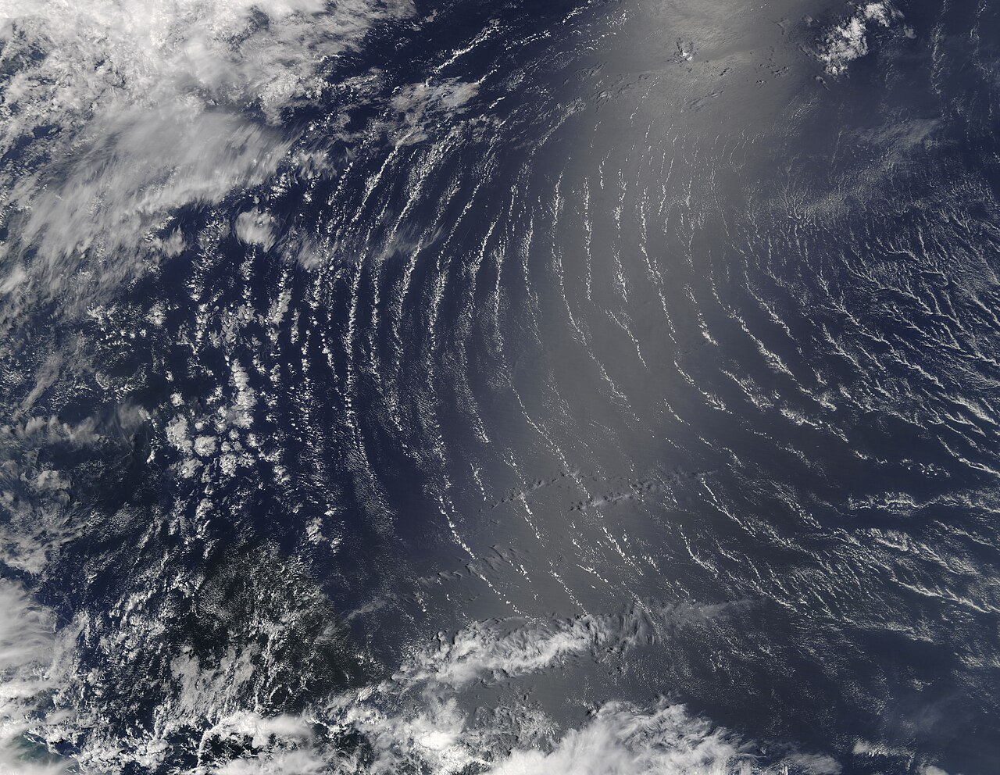
Selon les chercheurs, la tache froide de l'Atlantique pourrait expliquer les canicules extrêmes qui frappent l'Europe, a…
29 juin 2026 · 4 sourcesLa démence sénile et l'Alzheimer sont souvent confondus, mais il est essentiel de comprendre les différences entre ces d…
29 juin 2026 · 4 sourcesSelon le gouvernement, les industries qui rejettent des PFAS paieront une redevance à compter du 1er septembre 2026, ave…
29 juin 2026 · 3 sourcesLa France devait transposer la directive européenne sur la transparence des salaires d'ici le 7 juin, mais ce délai n'a …
29 juin 2026 · 4 sources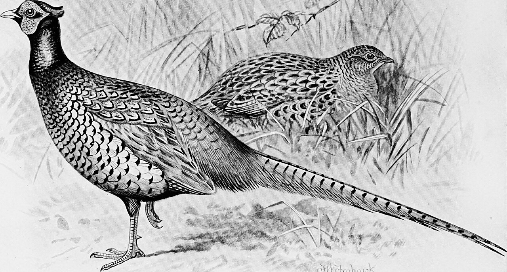
Le coucou, de la famille des cuculidés, est connu pour sa propension à parasiter les couvées d’autres oiseaux, avec une …
29 juin 2026 · 4 sourcesLe projet Frugalia vise à réduire la consommation énergétique des modèles d'intelligence artificielle, avec un objectif …
29 juin 2026 · 4 sourcesUne étude publiée dans la revue JAMA Network Open révèle que les personnes âgées qui ont une alimentation anti-inflammat…
29 juin 2026 · 4 sourcesL'Espagne a déployé un réseau national d'abris climatiques pour aider la population à se protéger des fortes vagues de c…
27 juin 2026 · 4 sourcesLe réchauffement climatique met la biodiversité en danger, avec des conséquences dévastatrices sur les populations anima…
27 juin 2026 · 4 sourcesSelon le New York Times, OpenAI a repoussé son introduction en Bourse à 2027, en raison de la volatilité de SpaceX et de…
27 juin 2026 · 4 sources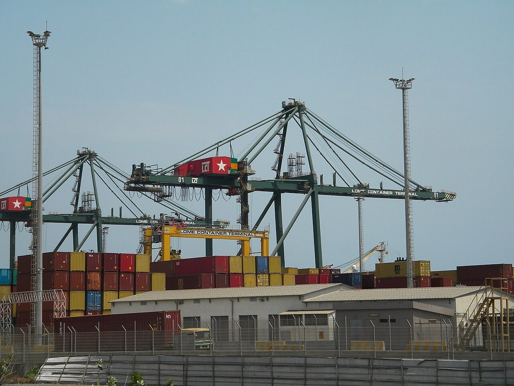
Le géant français du transport maritime CMA CGM a annoncé un investissement de 700 millions de dollars pour construire u…
27 juin 2026 · 4 sourcesSelon Météo-France, la fin des vigilances rouges est prévue pour dimanche à 22 heures, avec 37 départements encore conce…
27 juin 2026 · 4 sources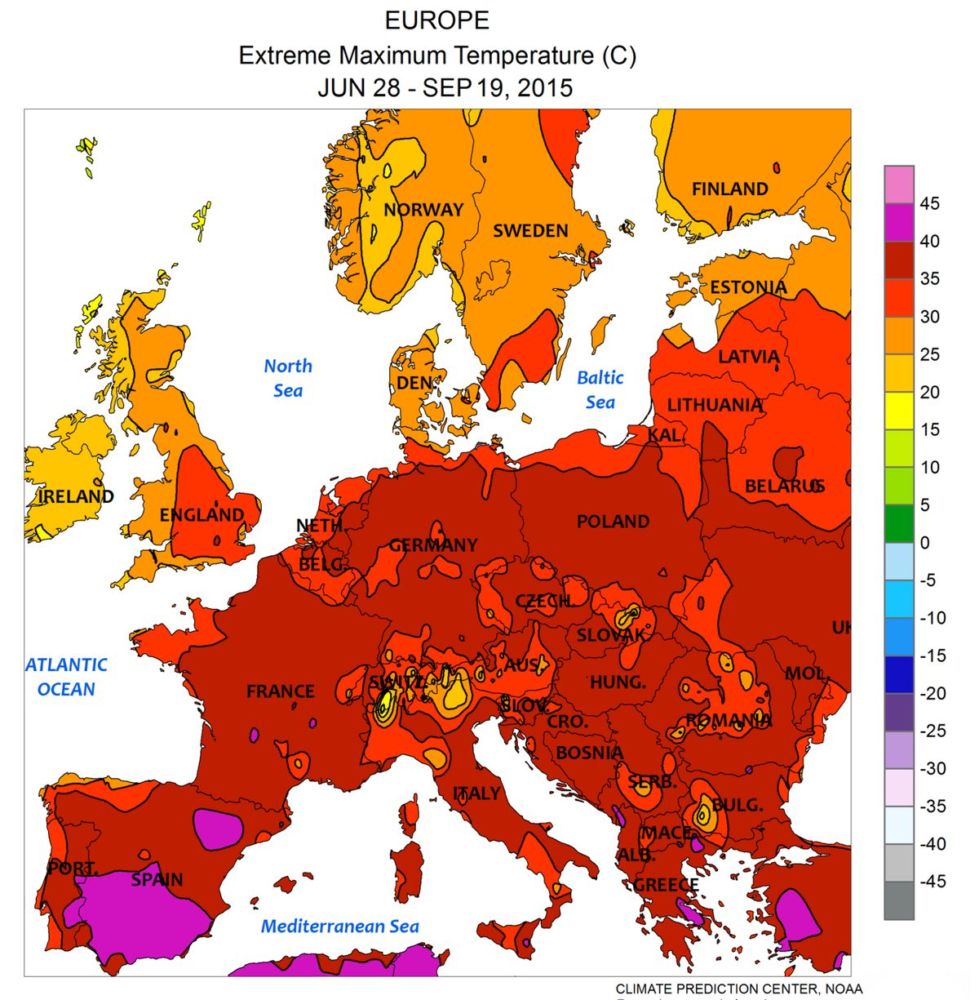
La France a connu sa journée la plus chaude jamais enregistrée, avec des températures supérieures à 40 °C dans plusieurs…
26 juin 2026 · 4 sourcesLe Redmi 15 5G est un smartphone abordable proposé par Xiaomi, équipé d'un écran de 6,9 pouces avec un taux de rafraîchi…
26 juin 2026 · 4 sources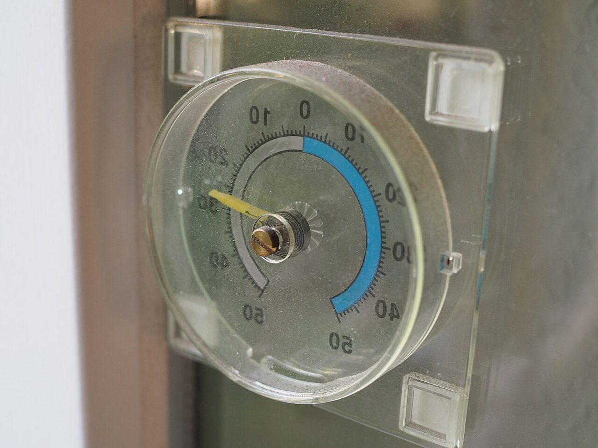
La température ressentie est un indice qui prend en compte les interactions entre le corps humain et les conditions mété…
26 juin 2026 · 4 sources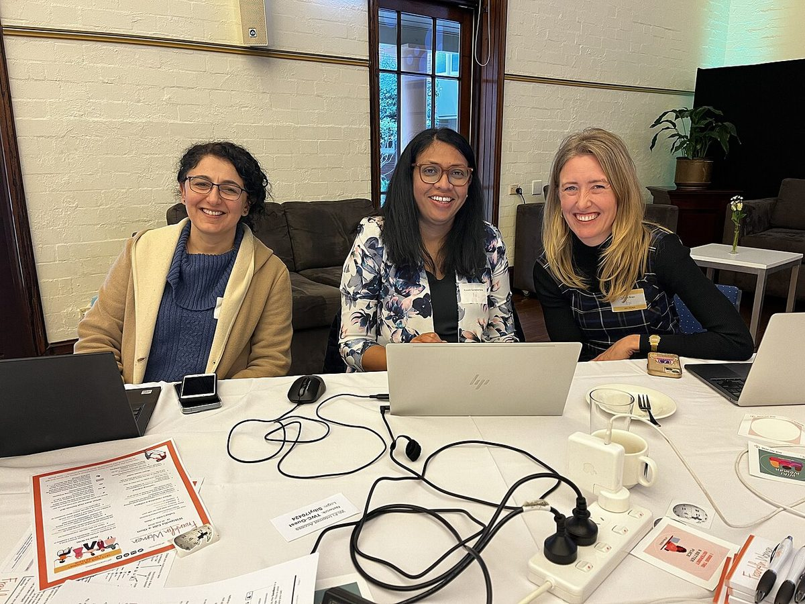
Selon une étude récente, arrêter de fumer, même tard dans la vie, réduit les risques de démence et retarde le déclin cog…
26 juin 2026 · 4 sourcesLes universités et les organismes de recherche voient leur trésorerie se dégrader, avec une situation inquiétante pour l…
26 juin 2026 · 4 sourcesChantal Delsol, philosophe et membre de l'Académie des sciences morales et politiques, a suscité la controverse en invit…
25 juin 2026 · 3 sourcesSelon David Renaudeau et Inaki Garcia de Cortazar-Atauri, chercheurs à l'Inrae, l'alternance d'événements climatiques ex…
24 juin 2026 · 5 sourcesLa France réchauffe 1,7 fois plus vite que la moyenne mondiale, selon les projections du GIEC
25 juin 2026 · 5 sources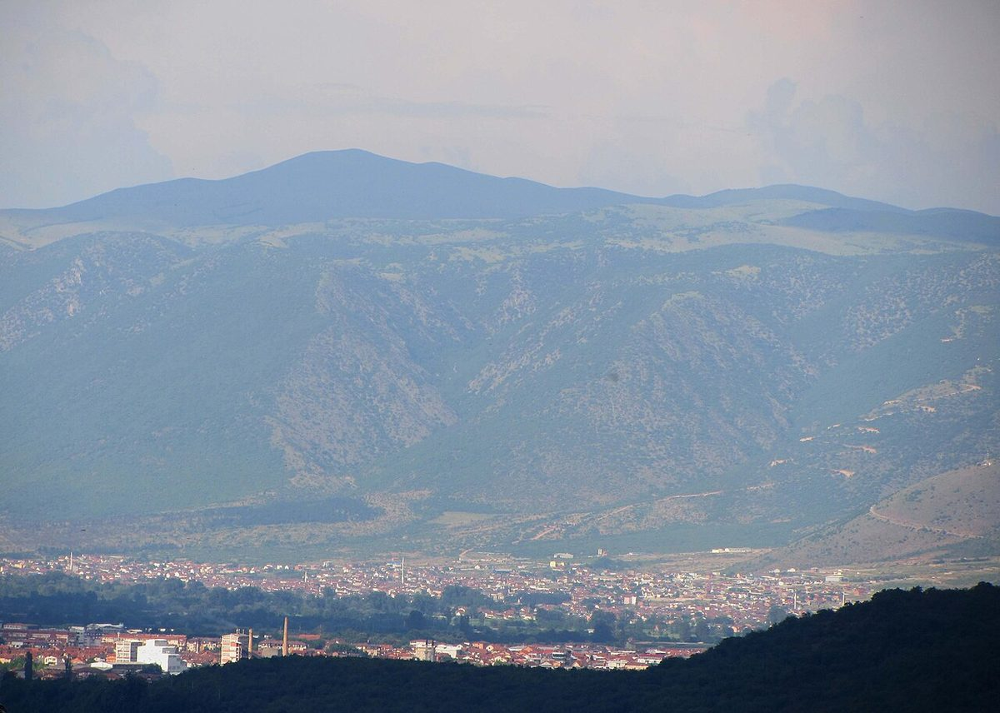
La santé environnementale est un enjeu central pour la planète et les humains
25 juin 2026 · 5 sourcesLa NASA a confié une mission de sauvetage audacieuse à Katalyst Space pour intercepter et récupérer le télescope Swift
25 juin 2026 · 5 sources840 millions d'euros pour payer l'immobilisme de l'État
25 juin 2026 · 5 sourcesUn épisode de canicule intense touche la France hexagonale depuis le 16 juin
25 juin 2026 · 5 sourcesLa théorie de l'évolution de Darwin explique l'origine des espèces par un mécanisme de changements
25 juin 2026 · 5 sourcesLes émissions de gaz à effet de serre en France ont diminué de 5,8% en 2023
25 juin 2026 · 3 sources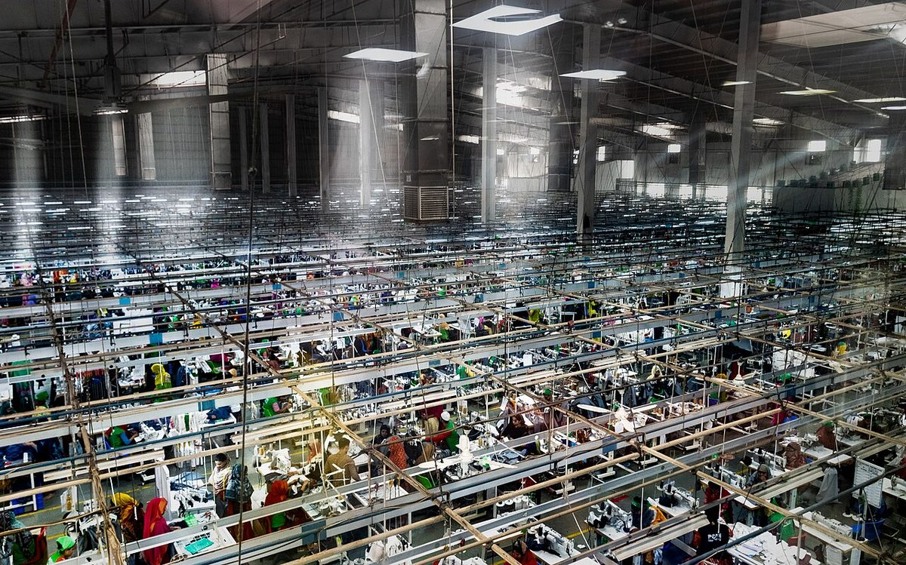
L'Assemblée nationale a adopté un texte ciblant l'ultra fast fashion
25 juin 2026 · 5 sources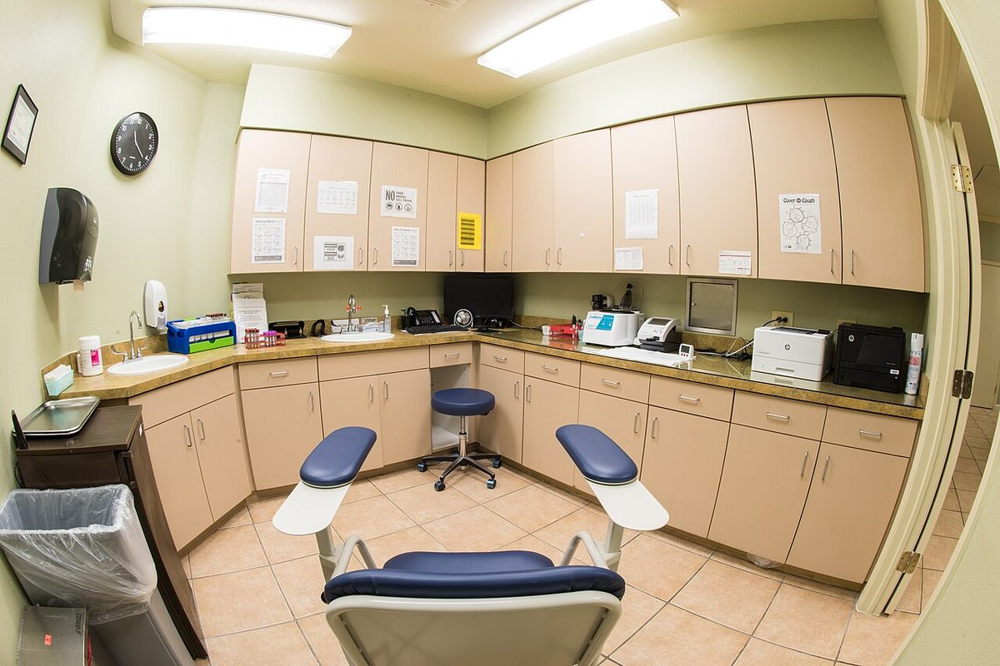
La subvention de l'ARS est maintenue pour 2026
25 juin 2026 · 4 sourcesLe Forum Santé Environnement 2024 a mis en avant l'importance de la santé environnementale
25 juin 2026 · 4 sourcesL'intelligence artificielle (IA) est de plus en plus utilisée dans le domaine de la santé pour améliorer la prise en cha…
25 juin 2026 · 5 sourcesUn médecin de retour de République démocratique du Congo est atteint du virus Ebola en France.
25 juin 2026 · 4 sources